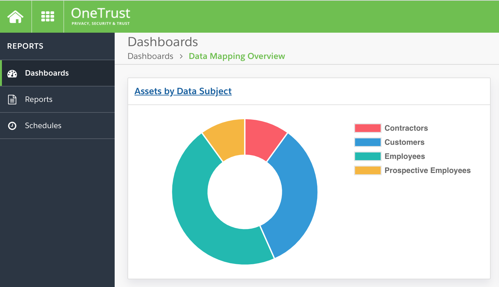
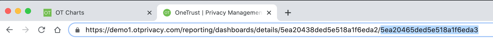
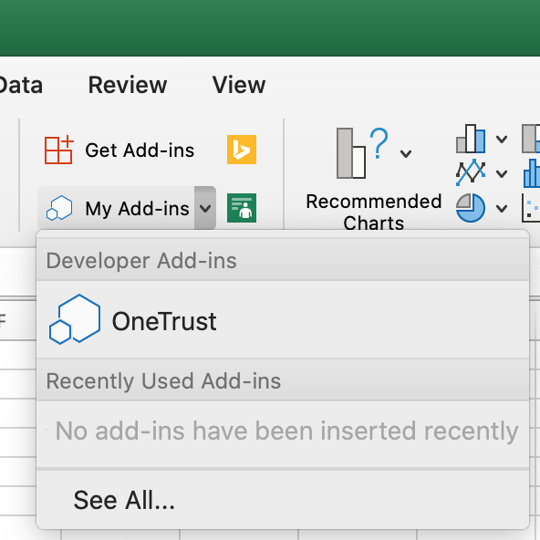
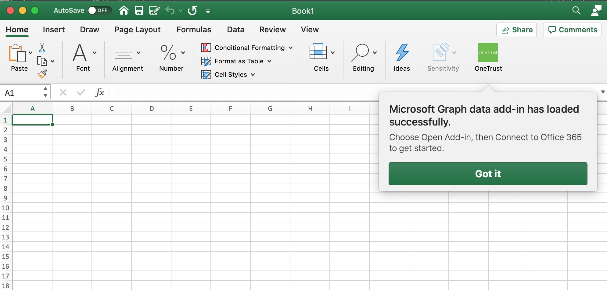
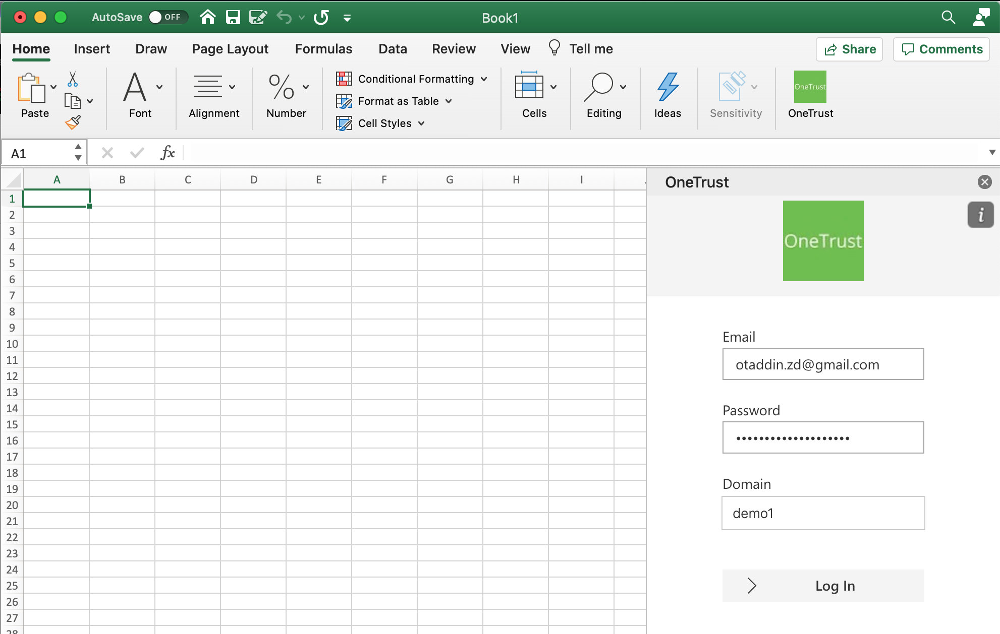
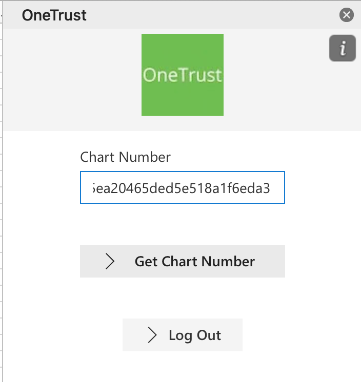
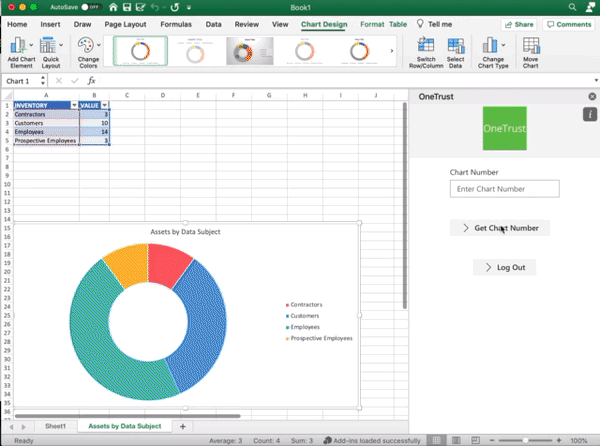

OneTrust Office Add-in for Excel (Beta)
Usage
The OneTrust Office Add-in for Excel allows you to take the id for any Chart in your OneTrust Dashboard and import that Chart into Excel. This is a live chart which you can update at any time and even copy into a Word document and maintain the connection to the live data in your Dashboard.
Below you will find the step by step istructions to import your first graph from your OneTrust dashboard into Excel.
Go to your dashboard and select a chart to import
-
Sign in to OneTrust
-
Open your Dashboards pane and select a dashboard
-
Choose a Chart and click on the title
 -
Finally click on the long alphanumeric code after the last slash in the url and copy this.
 -
In Excel, choose Insert > Add-ins > My Add-ins (drop-down menu), and then choose your add-in.
 -
Once your add-in is displayed in Excel, click on the OneTrust icon to open the AddIn.
 -
Next you will enter your username and password that you use at onetrust ( for the BETA, create a local accout which has access to your dashboards). We have automatically selected Demo1 as your site to use but this will eventually be automatically be chosen based on the e-mail address of the user logging in.
 -
Once you have logged in, paste in the alphanumeric that you copied from the URL bar in your Dashboard adn click Get Chart Number
 -
Now you get your Chart in Excel.
 -
Watch here for more information on what you can do with the Charts!